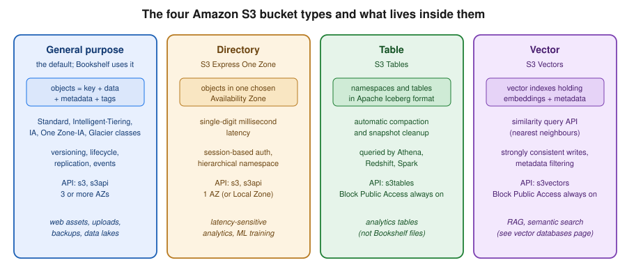

S3 Object Storage
|
This content was generated with the assistance of AI and should be verified against the official documentation before being relied on in production. |
Commands and behaviour below are current for AWS CLI v2 (2.37 line), the AWS SDK for Java 2.x and Spring Cloud AWS 4.x
(Spring Boot 4) or 3.4.x (Spring Boot 3.5), checked 2026-10-01. S3 gained a lot of features in 2025 and 2026 (S3 Tables,
S3 Vectors, the account regional namespace, conditional deletes, S3 Files), so confirm flags with aws s3api help and the
linked reference pages before relying on them in automation. Region us-east-1 is a placeholder throughout.
Amazon Simple Storage Service (S3) is the place where Bookshelf keeps every file that is not a database row: the static
web front end in bookshelf-web-<account-id> and the book covers and PDF uploads in bookshelf-uploads-<account-id>.
This page is the data-plane and storage-management half of S3: what a bucket and an object are, how to upload and read
them from the console, the CLI and Java, which storage class and lifecycle rule keeps the bill small, and how versioning
and replication protect the data. Access control (Block Public Access, bucket policies, encryption, Object Lock, CORS)
and the static site served through CloudFront are in S3 Security and Static Hosting; the CDN
itself is in CloudFront and CDN Delivery. Block and file storage (EBS, EFS) is in
Block and File Storage on AWS, and the Azure counterpart of this page is
Blob Storage. The generic Spring Boot view of object stores, including a comparison of the
three clouds, is in File Storage & Object Stores.

Buckets, objects and keys
S3 is an object store, not a file system. You create a bucket (a named container in one Region) and put objects
into it. An object is data plus metadata, addressed by its key. The key covers/9780134685991.jpg is one flat string;
the slash is only a convention. S3 has no real folders: the console shows covers/ as a folder because it groups keys
by prefix and delimiter, and an empty "folder" is just a zero-byte object whose key ends in a slash.
Since December 2020 S3 is strongly consistent for all operations in every Region: after a successful PUT, DELETE or overwrite, the next GET or LIST sees the change. There is no eventual-consistency window to code around, which older guides still describe. Concurrent writers to the same key are still last-writer-wins unless you use versioning or conditional writes (below).
Object metadata comes in three kinds: system metadata such as Content-Type, Content-Length, ETag and storage class;
user-defined metadata (x-amz-meta- headers, up to 2 KB); and *tags (up to 10 key-value pairs per object) that drive
lifecycle filters, cost allocation and access control. Metadata is immutable once written; changing it means copying the
object onto itself.
Bucket types
| Type | What it is | When to use it |
|---|---|---|
General purpose |
The classic bucket. Objects in any storage class except Express One Zone, stored across at least three Availability Zones (except One Zone-IA). All the features in this page apply. |
Almost everything, including both Bookshelf buckets. |
Directory |
Bucket for the S3 Express One Zone class: data in one Availability Zone you choose (or a Local Zone), single-digit
millisecond access, session-based authentication, hierarchical namespace. Created with |
Latency-sensitive workloads co-located with compute, such as ML training or interactive analytics. Not for Bookshelf. |
Table |
Bucket for S3 Tables: tables in Apache Iceberg format with automatic compaction and snapshot management, queried by
Athena, Redshift and Spark. Uses the |
Analytics tables that would otherwise be self-managed Iceberg files in a general purpose bucket. |
Vector |
Bucket for S3 Vectors: vector indexes holding embeddings with metadata and a similarity query API. Uses the |
Cost-sensitive RAG and semantic search with infrequent queries. See Comparing Vector Databases for how it compares with OpenSearch, Aurora pgvector and the other AWS options. |
Derived from the S3 User Guide — Working with S3 Tables, S3 Vectors and directory buckets pages.
Two newer S3 features are worth a mention without a walkthrough. S3 Metadata keeps a queryable table of your objects' system and custom metadata that updates near real time, so you can find objects with SQL instead of listing a bucket. S3 Files (2026) presents a bucket as a file system to compute that expects POSIX semantics; it is introduced in Block and File Storage on AWS, and its details are outside the scope of this page.
Naming and the account regional namespace
By default general purpose bucket names share one global namespace per partition: a name must be 3 to 63 characters of
lowercase letters, digits, hyphens and periods, and unique across every account and Region. Whoever creates a name
first owns it, and after you delete a bucket anyone can claim the name, which can send stray requests intended for your
deleted bucket to a stranger. That is why guides suggest appending the account ID, as in bookshelf-uploads-111122223333.
In 2026 S3 added an opt-in account regional namespace: names of the form <prefix>-<account-id>-<region>-an
(for example bookshelf-uploads-111122223333-us-east-1-an) can only ever be created by your account, can never be taken
over by another account after deletion, and support every S3 feature. You request it with the x-amz-bucket-namespace:
account-regional header (--bucket-namespace account-regional in the CLI); the console adds the suffix for you. The
suffix counts towards the 63-character limit, and the namespace is available in all Regions except Middle East (Bahrain)
and Middle East (UAE) at the time of writing. A Service Control Policy or IAM policy can require it with the
s3:x-amz-bucket-namespace condition key. The rest of this page uses a shell variable BUCKET so either naming style works.
Size limits
-
A single object can be up to 50 TB (raised from 5 TB in 2025).
-
A single
PutObject(or console upload) can carry at most 5 GB; larger objects must use multipart upload. -
Multipart upload splits an object into up to 10,000 parts; each part is 5 MiB to 5 GiB except the last, which can be smaller.
-
There is no limit on the number of objects per bucket. The default quota is 10,000 general purpose buckets per account (a quota increase raises it); check Service Quotas for the current number.
Creating a bucket
In the AWS Management Console
-
Choose the Region in the navigation bar (here
us-east-1) and open S3. -
Under General purpose buckets, choose Create bucket.
-
Enter the name. Choose Account Regional namespace (recommended) and enter only the prefix, or choose Global namespace and enter the whole unique name.
-
Leave ACLs disabled (recommended) (Bucket owner enforced) and keep Block all public access ticked. Both are the defaults, and Bookshelf buckets stay private.
-
Under Bucket Versioning choose Enable for the uploads bucket. Leave default encryption on SSE-S3 for now; the alternatives are in the security page.
-
Choose Create bucket. To work from a terminal without installing anything, open AWS CloudShell from the toolbar: it already has the AWS CLI configured for your signed-in identity and Region.
With the AWS CLI
There are two command groups. aws s3 is a high-level, file-system-flavoured tool (mb, cp, sync, ls, rm,
presign) that handles parallelism and multipart uploads for you. aws s3api maps one-to-one to S3 API operations and
exposes every option. Use s3 for moving files, s3api for configuration.
export AWS_REGION=us-east-1
export ACCOUNT_ID=$(aws sts get-caller-identity --query Account --output text)
export BUCKET=bookshelf-uploads-$ACCOUNT_ID-$AWS_REGION-an
# Account regional namespace bucket. In us-east-1 no LocationConstraint is allowed;
# in any other Region add --create-bucket-configuration LocationConstraint=$AWS_REGION
aws s3api create-bucket \
--bucket $BUCKET \
--bucket-namespace account-regional \
--region $AWS_REGION
# Versioning for the uploads bucket
aws s3api put-bucket-versioning \
--bucket $BUCKET \
--versioning-configuration Status=Enabled
# Confirm Block Public Access and default encryption (both on by default for new buckets)
aws s3api get-public-access-block --bucket $BUCKET
aws s3api get-bucket-encryption --bucket $BUCKETDerived from aws s3api create-bucket, aws s3api put-bucket-versioning and Namespaces for general purpose buckets.
For a global-namespace bucket drop --bucket-namespace and pick a unique name such as bookshelf-uploads-$ACCOUNT_ID.
Older tutorials create buckets with a public ACL or a public bucket policy; since April 2023 new buckets have Block
Public Access on and ACLs disabled, so those recipes now fail with AccessDenied (see the security page for the right
pattern). Since January 2023 every new object is also encrypted at rest with SSE-S3 by default, and since April 2026
SSE-C is blocked by default on new buckets.
Uploading and managing objects
In the AWS Management Console
-
Open the bucket and choose Upload.
-
Choose Add files or Add folder (or drag them in). Expand Properties to pick a Storage class, set default checksum and encryption, and add tags.
-
Choose Upload. The console handles files up to 160 GB; use the CLI, an SDK or Transfer Family beyond that.
-
To work with an object, select it and use Open, Download, Copy S3 URI, or the Actions menu (copy, move, rename, change storage class, restore, edit metadata or tags, share with a presigned URL). Object actions → Share with a presigned URL asks for a duration (the console limits it to 12 hours).
-
With versioning on, switch on Show versions in the object list to see every version and delete marker.
With the AWS CLI
# High-level: copy, sync, list, remove (multipart and parallelism handled for you)
aws s3 cp cover.jpg s3://$BUCKET/covers/9780134685991.jpg \
--storage-class INTELLIGENT_TIERING \
--metadata author=Bloch,source=import
aws s3 sync ./covers s3://$BUCKET/covers/ --exclude "*.tmp"
aws s3 ls s3://$BUCKET/covers/ --recursive --human-readable --summarize
aws s3 rm s3://$BUCKET/covers/old/ --recursive
# Low-level: one API call each, full control of headers and responses
aws s3api put-object \
--bucket $BUCKET --key covers/9780134685991.jpg \
--body cover.jpg --content-type image/jpeg \
--tagging 'project=bookshelf&kind=cover'
aws s3api head-object --bucket $BUCKET --key covers/9780134685991.jpg
aws s3api list-objects-v2 --bucket $BUCKET --prefix covers/ \
--query 'Contents[].[Key,Size,StorageClass]' --output table
aws s3api get-object --bucket $BUCKET --key covers/9780134685991.jpg out.jpgDerived from AWS CLI Command Reference — s3 and aws s3api put-object, head-object, list-objects-v2 and get-object.
Prefer list-objects-v2 over the older list-objects. aws s3 sync copies only new or changed files (size and
modified time) and, with --delete, removes destination objects that no longer exist in the source, so run it with
--dryrun first. The CLI computes a checksum for uploads by default (CRC64NVME for SDK and CLI clients since 2025), and
you can ask S3 to return it with --checksum-mode ENABLED on get-object or head-object to verify integrity.
Conditional writes and deletes
S3 can refuse a write that would overwrite data someone else just wrote. If-None-Match: * makes PutObject,
CopyObject or CompleteMultipartUpload fail with 412 Precondition Failed if the key already exists, which gives you
"create only" semantics. If-Match: <etag> makes the write succeed only if the current object still has that ETag
(optimistic concurrency, a compare-and-swap). If a concurrent delete wins the race you may see 409 Conflict or, with
If-Match, 404 Not Found, and you retry from the start. Requests must be signed with Signature Version 4, and a bucket
policy can require the headers. S3 also supports an If-Match condition on deletes, so a delete removes the object only
if it has not changed; see the API reference for DeleteObject.
# Create-only: fails with PreconditionFailed if the key exists
aws s3api put-object \
--bucket $BUCKET --key manifests/2026-10-01.json \
--body manifest.json --if-none-match "*"
# Compare-and-swap with the ETag from an earlier head-object
ETAG=$(aws s3api head-object --bucket $BUCKET --key manifests/2026-10-01.json \
--query ETag --output text)
aws s3api put-object \
--bucket $BUCKET --key manifests/2026-10-01.json \
--body manifest-v2.json --if-match "$ETAG"Multipart upload and Transfer Acceleration
Multipart upload splits one object into parts uploaded in parallel and retried independently. AWS recommends it for
objects of 100 MB or more, and it is mandatory above 5 GB. aws s3 cp and sync switch to multipart automatically
above a threshold (8 MB by default) and you tune them with aws configure set default.s3.multipart_threshold 64MB,
multipart_chunksize and max_concurrent_requests. The SDK transfer managers do the same.
The important operational rule: parts of an upload that was never completed or aborted stay in the bucket and are
billed as storage in the class they were uploaded to. Always add an AbortIncompleteMultipartUpload lifecycle rule
(below), and list stray uploads with:
aws s3api list-multipart-uploads --bucket $BUCKET
aws s3api abort-multipart-upload --bucket $BUCKET --key backups/big.tar --upload-id "$UPLOAD_ID"Derived from S3 User Guide — Uploading and copying objects using multipart upload, list-multipart-uploads and abort-multipart-upload.
Transfer Acceleration routes uploads and downloads through the nearest CloudFront edge location and over the AWS
backbone to the bucket, which helps when clients are far from the bucket’s Region. Enable it per bucket and use the
<bucket>.s3-accelerate.amazonaws.com endpoint; it is billed per GB on top of normal transfer and works only for
buckets whose names have no periods.
aws s3api put-bucket-accelerate-configuration \
--bucket $BUCKET --accelerate-configuration Status=Enabled
aws configure set default.s3.use_accelerate_endpoint trueStorage classes
Every object has a storage class that sets its price per GB, its availability and its minimum duration. You pick the
class at upload time (--storage-class) or move objects later with a lifecycle rule or a copy.
| Class (API value) | Meant for | Zones | Minimum duration | Retrieval |
|---|---|---|---|---|
Standard ( |
Frequently accessed data; the default. |
3 or more |
none |
none |
Intelligent-Tiering ( |
Unknown or changing access patterns; moves objects between tiers automatically. |
3 or more |
none |
none (monitoring fee per object) |
Standard-IA ( |
Long-lived data read about once a month, still millisecond access. |
3 or more |
30 days |
per-GB fee |
One Zone-IA ( |
Re-creatable infrequently accessed data and replicas; lost if the Availability Zone is destroyed. |
1 |
30 days |
per-GB fee |
Express One Zone ( |
Latency-sensitive data in directory buckets. |
1 |
none |
none |
Glacier Instant Retrieval ( |
Archive read about once a quarter with millisecond access. |
3 or more |
90 days |
per-GB fee |
Glacier Flexible Retrieval ( |
Archive read about once a year; minutes to hours to restore. |
3 or more |
90 days |
restore required |
Glacier Deep Archive ( |
Long-term archive read rarely; hours to restore. |
3 or more |
180 days |
restore required |
Standard-IA, One Zone-IA and Glacier Instant Retrieval bill a minimum of 128 KB per object, so they are a poor fit for
small objects such as thumbnails. Glacier Flexible Retrieval and Deep Archive add about 40 KB of metadata per object
(32 KB at the archive rate and 8 KB at the Standard rate). REDUCED_REDUNDANCY still exists in the API but AWS
recommends against it; Standard is cheaper. Availability design targets and the full comparison are in the
storage class overview.
Intelligent-Tiering
Intelligent-Tiering is the right default when you cannot predict access. Objects start in the Frequent Access tier, move to Infrequent Access after 30 days without access and to Archive Instant Access after 90 days, all with millisecond latency and no retrieval fees. A GET moves an object back to Frequent Access. Two optional tiers save more for data you can wait for: Archive Access (from 90 days, up to 730) and Deep Archive Access (from 180 days, up to 730). Objects in those two tiers must be restored before reading, so enable them only for workloads that can tolerate that. Objects under 128 KB are never monitored or tiered and are always billed at the Frequent Access rate. You pay a small monthly monitoring and automation fee per object instead of retrieval fees.
# Make Intelligent-Tiering the class for new uploads of covers
aws s3 cp cover.jpg s3://$BUCKET/covers/9780134685991.jpg --storage-class INTELLIGENT_TIERING
# Opt in to the two archive tiers for the "exports/" prefix
cat > tiering.json <<'JSON'
{
"Id": "archive-exports",
"Status": "Enabled",
"Filter": { "Prefix": "exports/" },
"Tierings": [
{ "Days": 90, "AccessTier": "ARCHIVE_ACCESS" },
{ "Days": 180, "AccessTier": "DEEP_ARCHIVE_ACCESS" }
]
}
JSON
aws s3api put-bucket-intelligent-tiering-configuration \
--bucket $BUCKET --id archive-exports \
--intelligent-tiering-configuration file://tiering.jsonRestoring archived objects
An object in Glacier Flexible Retrieval, Deep Archive, or an Intelligent-Tiering archive tier returns
InvalidObjectState on GET until you restore a temporary copy. The restore tier trades speed for price (Expedited,
Standard or Bulk for Flexible Retrieval; Standard or Bulk for Deep Archive).
aws s3api restore-object \
--bucket $BUCKET --key exports/2024-orders.csv.gz \
--restore-request '{"Days": 7, "GlacierJobParameters": {"Tier": "Standard"}}'
# Restore="ongoing-request=\"false\"" in the response means the copy is ready
aws s3api head-object --bucket $BUCKET --key exports/2024-orders.csv.gz --query RestoreDerived from aws s3api restore-object.
The standalone Amazon Glacier vault service (the one with vaults and archive IDs that older books describe) closed to new customers on 2025-12-15; existing vault data stays accessible (see the AWS lifecycle changes page). For new work use the S3 Glacier storage classes above, which keep the objects visible in your bucket.
Lifecycle rules
A lifecycle configuration is a list of rules, each with a filter (prefix, tags, object size) and actions: transition to a cheaper class after N days, expire (delete) after N days, expire noncurrent versions, remove expired delete markers, and abort incomplete multipart uploads. S3 evaluates them once a day, so an action happens within a day or so of the due date. Transitions run only "downhill" (Standard to Standard-IA after at least 30 days, and so on), and by default objects smaller than 128 KB are not transitioned to the IA and Glacier Instant classes.
The rule set below is what Bookshelf applies to the uploads bucket: temporary uploads expire after a week, uploads move to Standard-IA after 30 days and Glacier Instant Retrieval after 90, old versions are removed after 90 days, and failed multipart uploads are cleaned up after 7 days.
cat > lifecycle.json <<'JSON'
{
"Rules": [
{
"ID": "abort-incomplete-multipart",
"Status": "Enabled",
"Filter": { "Prefix": "" },
"AbortIncompleteMultipartUpload": { "DaysAfterInitiation": 7 }
},
{
"ID": "expire-tmp",
"Status": "Enabled",
"Filter": { "Prefix": "tmp/" },
"Expiration": { "Days": 7 }
},
{
"ID": "age-uploads",
"Status": "Enabled",
"Filter": { "Prefix": "uploads/" },
"Transitions": [
{ "Days": 30, "StorageClass": "STANDARD_IA" },
{ "Days": 90, "StorageClass": "GLACIER_IR" }
]
},
{
"ID": "trim-old-versions",
"Status": "Enabled",
"Filter": { "Prefix": "" },
"NoncurrentVersionExpiration": { "NoncurrentDays": 90, "NewerNoncurrentVersions": 3 },
"Expiration": { "ExpiredObjectDeleteMarker": true }
}
]
}
JSON
aws s3api put-bucket-lifecycle-configuration \
--bucket $BUCKET --lifecycle-configuration file://lifecycle.json
aws s3api get-bucket-lifecycle-configuration --bucket $BUCKETDerived from S3 User Guide — Managing the lifecycle of objects and aws s3api put-bucket-lifecycle-configuration.
In the console, open the bucket, choose Management → Lifecycle rules → Create lifecycle rule, scope it by prefix or tag, tick the actions (Transition current versions, Expire current versions, Permanently delete noncurrent versions, Delete expired object delete markers or incomplete multipart uploads) and enter the days; the console warns about costs when a rule moves many small objects. A lifecycle transition is a billed request, and objects deleted or transitioned before a class’s minimum duration are still charged for the full minimum. Do not stack a Standard-IA transition on objects that will be deleted within 30 days.
Where the choice is not obvious, S3 Storage Class Analysis observes access patterns for a prefix and suggests when to transition from Standard to Standard-IA, and Intelligent-Tiering removes the guesswork altogether at the cost of the monitoring fee.
Versioning and MFA delete
With versioning on, every PUT creates a new version with its own version ID, and a DELETE without a version ID only adds a delete marker; the previous versions stay and are billed. That makes accidental overwrites and deletions recoverable and is a prerequisite for replication and Object Lock. Versioning can be suspended but never turned fully off. A bucket is in one of three states: unversioned, enabled or suspended.
aws s3api list-object-versions --bucket $BUCKET --prefix covers/9780134685991.jpg \
--query '[Versions[].[VersionId,IsLatest,LastModified], DeleteMarkers[].[VersionId,IsLatest]]'
# Restore a deleted object: remove its delete marker
aws s3api delete-object --bucket $BUCKET --key covers/9780134685991.jpg --version-id "$DELETE_MARKER_ID"
# Read an old version
aws s3api get-object --bucket $BUCKET --key covers/9780134685991.jpg --version-id "$VERSION_ID" old.jpgMFA delete additionally requires a one-time code from the bucket owner’s root-account MFA device to change the versioning state or permanently delete a version. It can only be enabled by the root user with the CLI or API, which is why most teams rely on IAM policies, Object Lock and lifecycle rules (see the security page) instead.
Replication
Replication copies new objects automatically and asynchronously to another bucket. Cross-Region Replication (CRR) targets a bucket in another Region (disaster recovery, lower latency for remote users, compliance); Same-Region Replication (SRR) targets a bucket in the same Region (log aggregation, separating production and test data, a copy in a different account). Both buckets need versioning enabled, S3 needs an IAM role it can assume to read the source and write the destination, and only objects created after the rule exists are replicated by default. Existing objects are copied with S3 Batch Replication, which can also retry objects whose replication failed.
S3 Replication Time Control (RTC) adds a service-level objective: 99.99 percent of objects replicated within 15 minutes,
with metrics and event notifications for the exceptions. It is billed per GB replicated on top of normal replication
charges. Delete markers are replicated only if you enable DeleteMarkerReplication, and deleting a specific version
is never replicated, so a malicious delete in the source does not propagate.
export DEST_BUCKET=bookshelf-uploads-dr-$ACCOUNT_ID # created in another Region with versioning on
export REPLICATION_ROLE_ARN=arn:aws:iam::$ACCOUNT_ID:role/bookshelf-s3-replication
cat > replication.json <<JSON
{
"Role": "$REPLICATION_ROLE_ARN",
"Rules": [
{
"ID": "uploads-to-dr",
"Status": "Enabled",
"Priority": 1,
"Filter": { "Prefix": "uploads/" },
"DeleteMarkerReplication": { "Status": "Disabled" },
"Destination": {
"Bucket": "arn:aws:s3:::$DEST_BUCKET",
"StorageClass": "STANDARD_IA",
"ReplicationTime": { "Status": "Enabled", "Time": { "Minutes": 15 } },
"Metrics": { "Status": "Enabled", "EventThreshold": { "Minutes": 15 } }
}
}
]
}
JSON
aws s3api put-bucket-replication --bucket $BUCKET --replication-configuration file://replication.jsonDerived from S3 User Guide — Replicating objects within and across Regions and aws s3api put-bucket-replication.
The unquoted JSON heredoc delimiter above lets the shell expand the two variables. The role’s trust policy lets
s3.amazonaws.com assume it, and its permissions policy needs the following; replace the bucket names with yours.
{
"Version": "2012-10-17",
"Statement": [
{
"Sid": "ReadSourceConfiguration",
"Effect": "Allow",
"Action": ["s3:GetReplicationConfiguration", "s3:ListBucket"],
"Resource": "arn:aws:s3:::bookshelf-uploads-111122223333"
},
{
"Sid": "ReadSourceObjects",
"Effect": "Allow",
"Action": [
"s3:GetObjectVersionForReplication",
"s3:GetObjectVersionAcl",
"s3:GetObjectVersionTagging"
],
"Resource": "arn:aws:s3:::bookshelf-uploads-111122223333/*"
},
{
"Sid": "WriteDestination",
"Effect": "Allow",
"Action": ["s3:ReplicateObject", "s3:ReplicateDelete", "s3:ReplicateTags"],
"Resource": "arn:aws:s3:::bookshelf-uploads-dr-111122223333/*"
}
]
}Derived from S3 User
Guide — Setting up permissions for replication. If either bucket uses SSE-KMS the role also needs kms:Decrypt on the
source key and kms:Encrypt on the destination key, covered in the security page.
In the console: Management → Replication rules → Create replication rule, choose the scope, the destination bucket (this account or another), let the console create the IAM role, and tick Replication Time Control and Replication metrics if you need them. The console offers to run a one-time Batch Replication job for existing objects.
Event notifications
A bucket can emit events (s3:ObjectCreated:*, s3:ObjectRemoved:*, s3:Replication:*, lifecycle and restore events)
to a Lambda function, an SQS queue, an SNS topic or Amazon EventBridge. Bookshelf’s thumbnailer Lambda function runs
on s3:ObjectCreated:* for the covers/ prefix (see AWS Lambda and
Lambda: Event-Driven and Serverless Apps for the function and its execution role). Notifications are
delivered at least once, so the handler must be idempotent.
cat > notification.json <<JSON
{
"LambdaFunctionConfigurations": [
{
"Id": "thumbnail-new-covers",
"LambdaFunctionArn": "arn:aws:lambda:$AWS_REGION:$ACCOUNT_ID:function:thumbnailer",
"Events": ["s3:ObjectCreated:*"],
"Filter": { "Key": { "FilterRules": [
{ "Name": "prefix", "Value": "covers/" },
{ "Name": "suffix", "Value": ".jpg" } ] } }
}
]
}
JSON
# S3 must be allowed to invoke the function before the configuration is accepted
aws lambda add-permission --function-name thumbnailer --statement-id s3-invoke \
--action lambda:InvokeFunction --principal s3.amazonaws.com \
--source-arn arn:aws:s3:::$BUCKET --source-account $ACCOUNT_ID
aws s3api put-bucket-notification-configuration \
--bucket $BUCKET --notification-configuration file://notification.jsonDerived from S3 User Guide — Amazon S3
Event Notifications and
aws s3api
put-bucket-notification-configuration. Do not write results back to the same prefix a notification watches, or the
function triggers itself in a loop. EventBridge delivery (aws s3api put-bucket-notification-configuration with an
an empty EventBridgeConfiguration object) adds filtering, multiple targets and replay at slightly higher latency.
Presigned URLs
A presigned URL is an ordinary S3 URL with a signature, expiry and the signer’s permissions baked into the query
string. Whoever holds it can perform exactly one operation on exactly one object until it expires, without AWS
credentials. Bookshelf uses them so that a browser uploads a cover directly to S3 and a reader downloads a PDF without
the catalog-api proxying the bytes: the API authenticates the user, then returns a short-lived URL.
The URL’s power equals the signer’s permissions at the time of use, and it stops working when the signing credentials expire even if the URL’s own expiry is later. A URL signed with a role session’s temporary credentials is therefore valid for at most the remaining session lifetime (at most 12 hours for an assumed role, 6 hours for an instance profile, and the Lambda or task credential window in practice). To get the full 7 days that Signature Version 4 allows, sign with an IAM user’s long-term access keys, which is the opposite of best practice, so keep URLs to minutes.
In the AWS Management Console
Select the object and choose Object actions → Share with a presigned URL, enter the time interval (up to 12 hours in the console), and choose Create presigned URL. The URL is copied to the clipboard.
With the AWS CLI
# Download URL, valid for 10 minutes (the CLI presigns GET only)
aws s3 presign s3://$BUCKET/uploads/guide.pdf --expires-in 600Derived from aws s3 presign and the
S3 User Guide — Sharing objects with
presigned URLs. aws s3 presign can only create download URLs; for upload URLs use an SDK (below).
Application code
The recommended pattern is the same as everywhere on AWS: no keys in code. The catalog-api runs with a task role
(see ECS and Fargate) and the SDK finds its credentials through the default credential provider
chain. The role needs only what the code uses; this policy grants the application read, write and list access to the
uploads bucket and nothing else.
{
"Version": "2012-10-17",
"Statement": [
{
"Sid": "ListUploadsBucket",
"Effect": "Allow",
"Action": ["s3:ListBucket", "s3:GetBucketLocation"],
"Resource": "arn:aws:s3:::bookshelf-uploads-111122223333"
},
{
"Sid": "ReadWriteUploadObjects",
"Effect": "Allow",
"Action": [
"s3:GetObject",
"s3:PutObject",
"s3:AbortMultipartUpload",
"s3:ListBucketMultipartUploads",
"s3:ListMultipartUploadParts"
],
"Resource": "arn:aws:s3:::bookshelf-uploads-111122223333/*"
}
]
}Derived from S3 User Guide — How Amazon S3 works with IAM and the Service
Authorization Reference for Amazon S3. Bucket-level actions go on the bucket ARN and object-level actions on the
/* ARN; mixing them up is the classic cause of AccessDenied. If the bucket uses SSE-KMS the role also needs
kms:GenerateDataKey and kms:Decrypt on the key (see the security page). IAM policy evaluation itself is in
Identity and Access.
Java with the AWS SDK for Java 2.x
package com.example.bookshelf.storage;
import java.net.URL;
import java.nio.file.Path;
import java.time.Duration;
import software.amazon.awssdk.core.sync.RequestBody;
import software.amazon.awssdk.services.s3.S3AsyncClient;
import software.amazon.awssdk.services.s3.S3Client;
import software.amazon.awssdk.services.s3.model.GetObjectRequest;
import software.amazon.awssdk.services.s3.model.PutObjectRequest;
import software.amazon.awssdk.services.s3.model.StorageClass;
import software.amazon.awssdk.services.s3.presigner.S3Presigner;
import software.amazon.awssdk.services.s3.presigner.model.GetObjectPresignRequest;
import software.amazon.awssdk.services.s3.presigner.model.PutObjectPresignRequest;
import software.amazon.awssdk.transfer.s3.S3TransferManager;
import software.amazon.awssdk.transfer.s3.model.UploadFileRequest;
public class CoverStorage implements AutoCloseable {
private final String bucket;
private final S3Client s3 = S3Client.create(); // default credential chain and Region
private final S3Presigner presigner = S3Presigner.create();
private final S3TransferManager transfers = S3TransferManager.builder()
.s3Client(S3AsyncClient.crtBuilder().build()) // CRT client: parallel multipart, needs aws-crt
.build();
public CoverStorage(String bucket) {
this.bucket = bucket;
}
public void putCover(String isbn, byte[] jpeg) {
s3.putObject(PutObjectRequest.builder()
.bucket(bucket)
.key("covers/" + isbn + ".jpg")
.contentType("image/jpeg")
.storageClass(StorageClass.INTELLIGENT_TIERING)
.build(),
RequestBody.fromBytes(jpeg));
}
public void uploadLargeFile(String key, Path file) {
// Multipart, parallel and retried automatically
transfers.uploadFile(UploadFileRequest.builder()
.putObjectRequest(r -> r.bucket(bucket).key(key))
.source(file)
.build())
.completionFuture().join();
}
public URL presignedDownload(String key) {
return presigner.presignGetObject(GetObjectPresignRequest.builder()
.signatureDuration(Duration.ofMinutes(10))
.getObjectRequest(GetObjectRequest.builder().bucket(bucket).key(key).build())
.build())
.url();
}
public URL presignedUpload(String isbn) {
return presigner.presignPutObject(PutObjectPresignRequest.builder()
.signatureDuration(Duration.ofMinutes(10))
.putObjectRequest(PutObjectRequest.builder()
.bucket(bucket)
.key("covers/" + isbn + ".jpg")
.contentType("image/jpeg") // the browser must send the same header
.build())
.build())
.url();
}
@Override
public void close() {
transfers.close();
presigner.close();
s3.close();
}
}Derived from the AWS SDK for Java 2.x
Developer Guide — Amazon S3 examples, the
S3 Transfer Manager and presigned
URLs. Create clients once and reuse them; they are thread-safe and hold connection pools. The presigned PUT only works
if the browser sends exactly the signed headers (here Content-Type).
Spring Cloud AWS
With Spring Cloud AWS the starter io.awspring.cloud:spring-cloud-aws-starter-s3 auto-configures an S3Client and an
S3Template, and reads the Region and credentials from the standard sources (spring.cloud.aws.region.static is a
local override; in ECS the task role is used automatically). The S3Template hides streams and metadata, and signs URLs.
The wiring, the Resource abstraction and testing without AWS are in
File Storage & Object Stores; the two snippets below show only what is S3-specific.
@Service
public class CoverService {
private final S3Template s3Template;
private final String bucket;
public CoverService(S3Template s3Template,
@Value("${bookshelf.uploads-bucket}") String bucket) {
this.s3Template = s3Template;
this.bucket = bucket;
}
public void save(String isbn, InputStream data, String contentType) {
s3Template.upload(bucket, "covers/" + isbn + ".jpg", data,
ObjectMetadata.builder().contentType(contentType).build());
}
public URL downloadUrl(String isbn) {
return s3Template.createSignedGetURL(bucket, "covers/" + isbn + ".jpg", Duration.ofMinutes(10));
}
}Derived from the Spring Cloud AWS reference — S3 integration.
Python with boto3
Python is handy for operational scripts and Lambda functions. generate_presigned_url and upload_file (which uses a
transfer manager with multipart) parallel the Java calls; credentials again come from the default chain.
import boto3
s3 = boto3.client("s3")
bucket = "bookshelf-uploads-111122223333"
s3.upload_file("cover.jpg", bucket, "covers/9780134685991.jpg",
ExtraArgs={"ContentType": "image/jpeg", "StorageClass": "INTELLIGENT_TIERING"})
url = s3.generate_presigned_url(
"get_object",
Params={"Bucket": bucket, "Key": "uploads/guide.pdf"},
ExpiresIn=600,
)Derived from the boto3 documentation — Presigned URLs and S3.Client.upload_file.
Performance
S3 scales request rate per prefix: at least 3,500 PUT, COPY, POST or DELETE and 5,500 GET or HEAD requests per second
for each prefix in a bucket, with no limit on the number of prefixes. Throughput ramps up gradually, and during the
ramp you may see 503 Slow Down responses that the SDKs retry with backoff. Older guidance to randomize key prefixes
with hashes no longer applies; spread hot traffic over several prefixes only when one prefix saturates.
-
Parallelize: many concurrent requests, and multipart upload or ranged GETs for large objects. The CRT-based S3 client and the transfer managers do this and can approach the host’s network limit.
-
Byte-range fetches:
aws s3api get-object --range bytes=0-1048575reads part of an object, which lets a client fetch pieces in parallel or read only a file’s footer. -
Keep traffic in-Region and use a gateway VPC endpoint for private subnets (see the next section) to avoid NAT gateway data charges.
-
Cache hot objects with CloudFront (CloudFront and CDN Delivery) or ElastiCache, and use Transfer Acceleration for far-away uploaders.
-
Mountpoint for Amazon S3 is an open-source client that mounts a bucket as a local file system on Linux (EC2, EKS through the CSI driver) for read-heavy workloads such as ML training. It supports sequential writes of new objects but not in-place edits or renames; for full file semantics use S3 Files or EFS instead.
-
Directory buckets with Express One Zone give consistent single-digit millisecond latency for the few workloads that need it.
Networking
S3 is a regional service reached over public endpoints (s3.<region>.amazonaws.com and
<bucket>.s3.<region>.amazonaws.com) with TLS, and it supports IPv6 on dual-stack endpoints. Workloads in private
subnets do not need an internet path: a gateway VPC endpoint for S3 adds a route-table entry that sends S3 traffic
over the AWS network at no hourly or per-GB charge, and an endpoint policy can restrict which buckets and actions the
VPC may use. An interface endpoint (AWS PrivateLink) additionally gives S3 private IP addresses reachable from
on-premises networks over VPN or Direct Connect. A bucket policy can then require traffic to come through a specific
endpoint with the aws:SourceVpce condition key (see the security page). Virtual networks and routing are covered in
AWS Global Infrastructure for the geography and in the networking pages of this section.
export VPC_ID=vpc-0abc1234def567890 # placeholder
export ROUTE_TABLE_ID=rtb-0abc1234def567890
aws ec2 create-vpc-endpoint \
--vpc-id $VPC_ID \
--vpc-endpoint-type Gateway \
--service-name com.amazonaws.$AWS_REGION.s3 \
--route-table-ids $ROUTE_TABLE_IDDerived from aws ec2 create-vpc-endpoint and
Gateway endpoints for Amazon S3. In the console
use VPC → Endpoints → Create endpoint, filter for the service com.amazonaws.us-east-1.s3 of type Gateway,
and select the route tables of your private subnets.
Observability and data management
-
CloudWatch metrics: daily storage metrics are free; request metrics (per bucket, prefix or tag) and replication metrics are optional and billed.
-
Server access logs and CloudTrail data events record who read or wrote which object; data events are billed per event, so scope them to sensitive buckets.
-
S3 Storage Lens is a dashboard of usage and activity metrics across all accounts and buckets in an organization, with recommendations such as buckets without lifecycle rules or with many incomplete multipart uploads. The free tier shows summary metrics; the advanced tier adds prefix-level metrics and retains history.
-
S3 Inventory writes a daily or weekly CSV, ORC or Parquet report of all objects and their metadata, queryable with Athena, which is far cheaper than listing a huge bucket.
-
S3 Metadata keeps a queryable table of object metadata that updates continuously (see the bucket types above).
-
S3 Batch Operations applies one action (copy, tag, restore, invoke Lambda, replicate) to a billion objects listed in an inventory report.
-
Cost allocation tags on buckets and objects split the bill by project in Cost Explorer.
aws s3control list-storage-lens-configurations --account-id $ACCOUNT_ID
aws s3api put-bucket-inventory-configuration \
--bucket $BUCKET --id weekly-inventory \
--inventory-configuration '{
"Id": "weekly-inventory",
"IsEnabled": true,
"IncludedObjectVersions": "Current",
"Schedule": { "Frequency": "Weekly" },
"Destination": { "S3BucketDestination": {
"Bucket": "arn:aws:s3:::bookshelf-inventory-111122223333",
"Format": "Parquet" } }
}'Derived from S3 User Guide — Assessing your storage activity and usage with S3 Storage Lens and aws s3api put-bucket-inventory-configuration. The destination bucket needs a bucket policy that lets S3 write the report.
Pricing model
Prices change and differ by Region, so this page lists the drivers rather than numbers; use the S3 pricing page and the AWS Pricing Calculator (pricing checked 2026-10-01).
-
Storage, per GB-month and per class. Prices fall from Standard through IA to Glacier Deep Archive. Versions, delete markers' keys, incomplete multipart parts and replicas all count.
-
Requests, per thousand or million, with PUT, COPY, POST and LIST costing more than GET and HEAD, and the cheaper classes costing more per request. Lifecycle transitions are billed as requests.
-
Retrieval, per GB, for Standard-IA, One Zone-IA and the Glacier classes, plus restore request fees for the archive classes.
-
Minimum durations and minimum object sizes (30, 90 or 180 days; 128 KB) for the IA and Glacier classes: early deletion and tiny objects cost more than they save.
-
Monitoring and automation, per object, for Intelligent-Tiering (objects under 128 KB are exempt).
-
Data transfer: inbound is free, in-Region transfer to EC2 or through a gateway endpoint is free, transfer out to the internet and between Regions is billed per GB (CloudFront has a different, usually lower rate and a free allowance; see the CloudFront page). Transfer Acceleration adds a per-GB charge.
-
Replication: the destination storage and requests, inter-Region transfer for CRR, and an RTC per-GB fee.
-
Management features: Storage Lens advanced metrics, Inventory and Batch Operations per object listed, CloudWatch request metrics, CloudTrail data events, and KMS requests when you use SSE-KMS (S3 Bucket Keys reduce them).
-
Free Tier: new accounts get a limited allowance of Standard storage, requests and data transfer under the current Free Tier rules; check the pricing page for the exact terms.
The practical levers are an AbortIncompleteMultipartUpload rule on every bucket, noncurrent-version expiration on
every versioned bucket, Intelligent-Tiering or lifecycle transitions for aging data, a gateway endpoint to keep
traffic off the NAT gateway, and CloudFront in front of public content.
Limits and recent changes
-
Object size: 50 TB maximum; 5 GB maximum per single PUT; 10,000 parts per multipart upload.
-
Request rates scale per prefix (above); metadata is limited to 2 KB for user-defined headers and 10 tags per object.
-
Key length is at most 1,024 bytes of UTF-8. Bucket names are 3 to 63 characters.
-
Default quota of 10,000 general purpose buckets per account, adjustable through Service Quotas.
-
2023-01: SSE-S3 default encryption on all new objects. 2023-04: Block Public Access on and ACLs disabled by default on new buckets. 2025: conditional writes (
If-None-Match,If-Match), 50 TB objects, S3 Tables, S3 Vectors preview. 2025-12: S3 Vectors generally available (announcement); the standalone Amazon Glacier vault service closed to new customers. 2025-11-07: S3 Object Lambda closed to new customers. 2026-03: account regional namespace. 2026-04: SSE-C blocked by default on new buckets; S3 Files. -
Older guides and books still show public-ACL and public-bucket-policy static sites, the
aws s3 mbplus--acl public-readpattern,gp2volume comparisons, "eventual consistency" caveats, hashed key prefixes, and the Glacier vault API. The current approach is private buckets, bucket policies or IAM roles, and CloudFront with Origin Access Control.
Troubleshooting
| Symptom | Likely cause | What to check |
|---|---|---|
|
The IAM policy or bucket policy does not allow the action, the action is on the wrong ARN (bucket versus |
Run |
|
The bucket name is wrong, deleted, or in another Region than the endpoint used. |
Run |
|
The global-namespace name is already used by another account. |
Pick another name with a random or account suffix, or use the account regional namespace. |
|
You already own a bucket with that name. |
|
|
The bucket still has objects, versions, delete markers or in-progress multipart uploads. |
Follow the Clean up steps; |
|
The object is in an archive class or archive tier. |
|
|
The key is misspelled, has a leading slash, was deleted, or you are reading the wrong version. |
|
|
Request rate on a prefix grew faster than S3 could scale it. |
Retry with exponential backoff (SDKs do), spread load across prefixes, and ramp traffic up gradually. |
|
A conditional write found the key already present or the ETag changed. |
Expected under contention; read the current object and retry deliberately. |
Presigned URL returns |
The client sent different headers than were signed (for example another |
Sign with the same headers and Region the client will use; sign with |
Presigned URL returns |
The URL expired, or the temporary credentials that signed it did. |
Shorten the intended use time, regenerate per request, and remember the role session limits. |
Lifecycle rule did nothing |
Rules run asynchronously about once a day; the filter does not match; the minimum-size or minimum-age rule blocks a transition; the object is under 128 KB. |
|
Replication shows |
Versioning is off on one bucket, the role lacks permissions, KMS permissions are missing, or the object predates the rule. |
|
Unexpected cost |
Incomplete multipart uploads, old noncurrent versions, many tiny objects in IA classes, NAT gateway data charges, or CloudTrail data events. |
Storage Lens, Cost Explorer filtered by usage type, and a lifecycle review. |
Derived from the S3 User Guide — Troubleshooting and the S3 API error code list.
Clean up
Bookshelf buckets are versioned, so aws s3 rb --force is not enough: it deletes current objects (adding delete
markers) but leaves every version and delete marker behind, and delete-bucket then fails with BucketNotEmpty. Delete
in dependency order: replication and notification configuration first (so nothing writes while you clean), then
versions and delete markers, then in-progress multipart uploads, then the bucket.
# 1. Stop writers: remove replication and notifications
aws s3api delete-bucket-replication --bucket $BUCKET
aws s3api put-bucket-notification-configuration --bucket $BUCKET --notification-configuration '{}'
# 2. Delete every object version and delete marker, 1000 at a time
for kind in Versions DeleteMarkers; do
while : ; do
BATCH=$(aws s3api list-object-versions --bucket "$BUCKET" --max-items 1000 \
--query "{Objects: $kind[].{Key: Key, VersionId: VersionId}}" --output json)
[ "$(echo "$BATCH" | jq '(.Objects // []) | length')" -eq 0 ] && break
aws s3api delete-objects --bucket "$BUCKET" \
--delete "$(echo "$BATCH" | jq -c '{Objects: .Objects, Quiet: true}')" > /dev/null
done
done
# 3. Abort leftover multipart uploads
aws s3api list-multipart-uploads --bucket $BUCKET \
--query 'Uploads[].[Key,UploadId]' --output text \
| while read -r KEY UPLOAD_ID; do
aws s3api abort-multipart-upload --bucket $BUCKET --key "$KEY" --upload-id "$UPLOAD_ID"
done
# 4. Delete the bucket (and the DR bucket the same way)
aws s3api delete-bucket --bucket $BUCKETDerived from S3 User Guide — Deleting a bucket and aws s3api delete-objects.
In the console, select the bucket and choose Empty, confirm by typing permanently delete, then choose Delete
and type the bucket name; Empty removes all versions and delete markers. If you used a lifecycle rule to expire
everything, the bucket empties itself within a day or two. Also delete the replication IAM role, the Lambda permission
statement, any gateway endpoint created only for this page, the Inventory destination bucket, and any S3 Tables or
Vectors buckets you tried. Objects under Object Lock retention or legal hold cannot be deleted until the hold ends.
Related pages
-
S3 Security and Static Hosting covers Block Public Access, bucket policies, encryption, Object Lock, access points, CORS and the private-bucket-plus-CloudFront site.
-
CloudFront and CDN Delivery serves S3 content globally through Origin Access Control.
-
Block and File Storage on AWS compares S3 with EBS, EFS and FSx.
-
Identity and Access explains the roles and policy evaluation used here.
-
AWS Lambda and Lambda: Event-Driven and Serverless Apps handle S3 events.
-
Infrastructure as Code creates the Bookshelf buckets in a CloudFormation template.
-
File Storage & Object Stores shows
S3Templatenext to the other clouds' clients. -
Blob Storage is the Azure counterpart (Blob Storage).
-
Media Optimization on AWS processes uploaded images and videos with Lambda and MediaConvert.